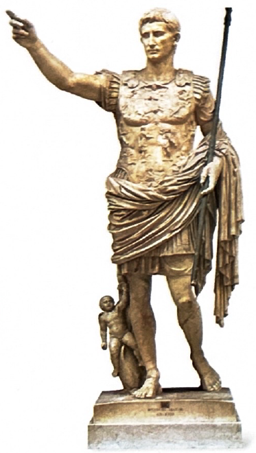
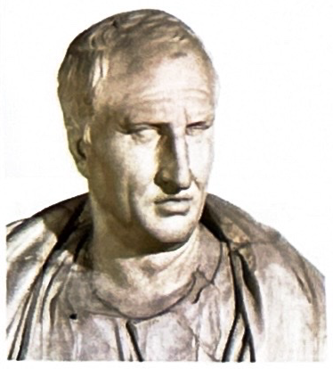
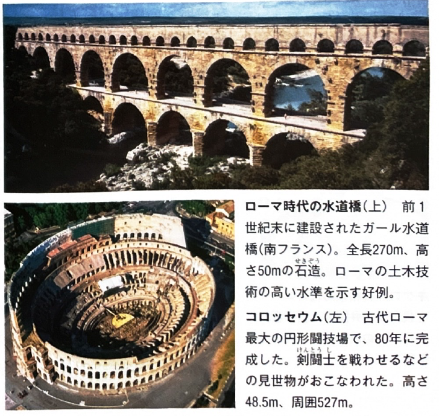
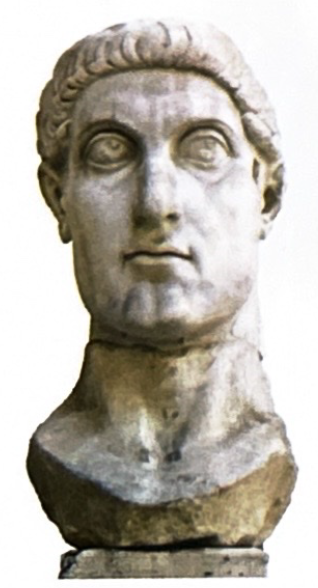
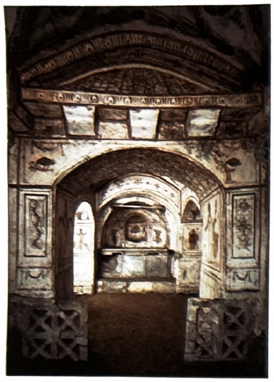
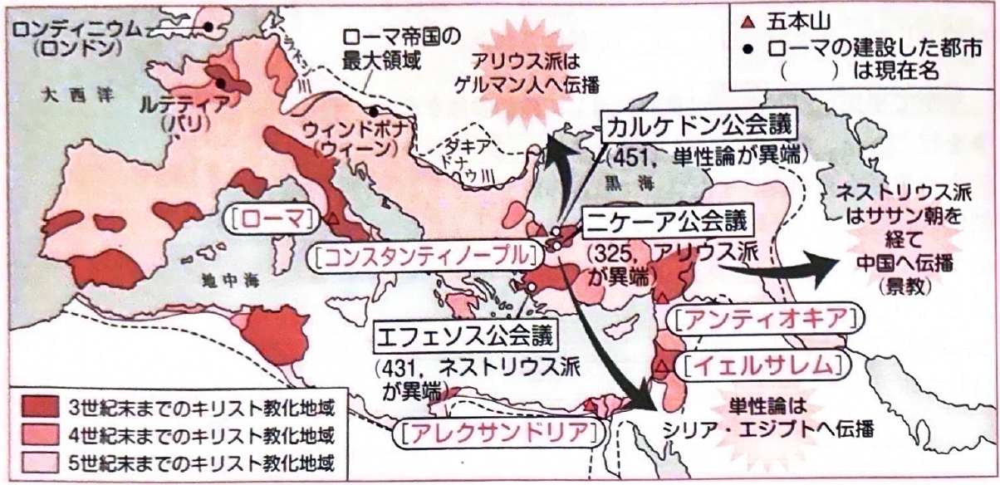
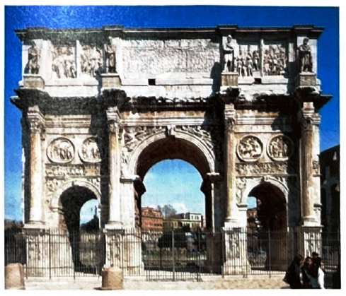
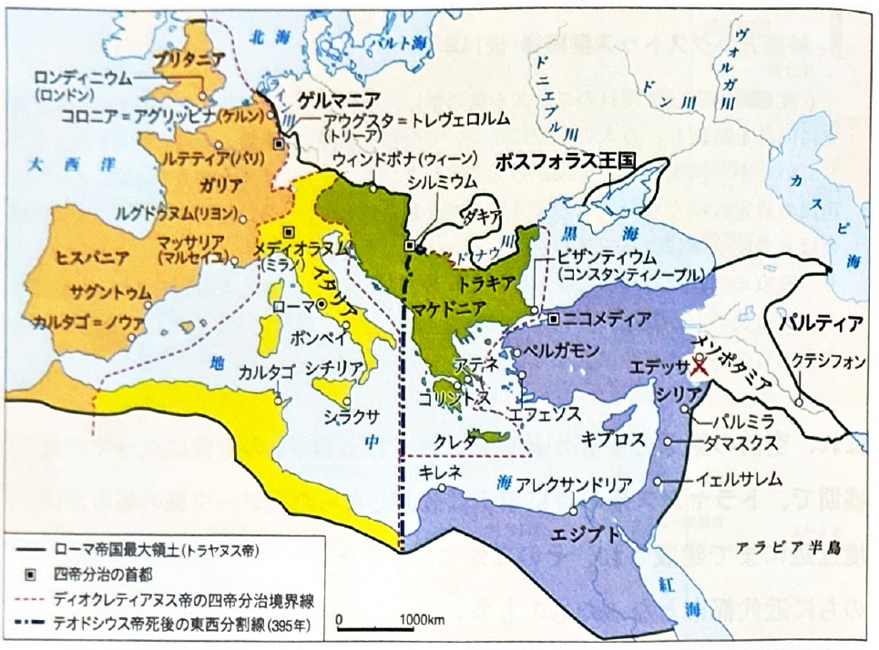

9. 帝政ローマ・キリスト教の成立
テーマ別詳細
-
1. 帝政の開始と五賢帝時代（パクス＝ロマーナ）
【元首政（プリンキパトゥス）の開始】
前27年、オクタウィアヌスは元老院から「アウグストゥス（尊厳なる者）」の称号を与えられ、事実上の帝政が開始された。彼は共和政の形式を尊重し、自らを「プリンケプス（第一の市民）」と称したため、この前期帝政を元首政と呼ぶ。
【五賢帝時代】
帝政開始から約200年間は、ローマの平和（パクス＝ロマーナ）と呼ばれる最盛期であり、特に2世紀の五賢帝時代に繁栄を極めた。
・ネルウァ：五賢帝の最初。
・トラヤヌス：ダキアを征服し、ローマ帝国の領土を最大にした。
・ハドリアヌス：ブリタニアに長城を築くなど、防衛策に転じた。
・アントニヌス＝ピウス：平和な治世。
・マルクス＝アウレリウス＝アントニヌス：ストア派の哲学者でもあり、『自省録』を著した（哲人皇帝）。
アウグストゥス像 
弁論家キケロ 
コロッセウムと水道橋 -
2. 帝国の混乱と再建
【軍人皇帝時代と社会の変化】
3世紀に入ると、各地の軍隊が勝手に皇帝を擁立する軍人皇帝時代となり、帝国は混乱に陥った。東方からはササン朝ペルシアが侵入し（シャープール1世がウァレリアヌス帝を捕虜にする）、北方からはゲルマン人が侵入した。
3世紀前半、カラカラ帝がアントニヌス勅令を発布し、帝国内の全自由民にローマ市民権を与え、税収の増加を図った。
また、奴隷の供給が減少したため、奴隷制大農場（ラティフンディア）に代わり、コロヌス（小作人）を労働力とするコロナトゥスという生産体制が普及していった。
【専制君主政（ドミナトゥス）】
3世紀末、ディオクレティアヌス帝が混乱を収拾した。彼は元老院を無視し、オリエント風の絶対君主として振る舞う専制君主政（ドミナトゥス）を開始した。また、広大な帝国を維持するため、帝国を4つに分割して統治する四帝分治制（テトラルキア）を導入し、キリスト教に対する大迫害を行った。
コンスタンティヌス帝の巨像（頭部） -
3. キリスト教の成立と発展
【成立と迫害】
1世紀前半、パレスチナ地方でイエスがキリスト教を創始した。神の絶対愛と隣人愛を説いたが、ユダヤ教のパリサイ派に告発され、ローマの総督ピラトによって十字架にかけられた。
その後、使徒ペテロや、異邦人（非ユダヤ人）への布教に活躍したパウロらによって地中海世界に広まった（教典はギリシア語の『新約聖書』）。
しかし、皇帝崇拝を拒否したため、ディオクレティアヌス帝の時代などに激しい迫害を受け、信者たちはカタコンベ（地下墓所）に隠れて信仰を守った。
【公認から国教化へ】
・313年：コンスタンティヌス帝がミラノ勅令を発布し、キリスト教を公認した。
・325年：ニケーア公会議が開かれ、イエスを神と同一とするアタナシウス派が正統とされ、イエスを人間とするアリウス派が異端とされた。
（※その後、431年のエフェソス公会議でネストリウス派が異端とされ、451年のカルケドン公会議で単性論が異端とされた。）
・392年：テオドシウス帝がキリスト教を国教化し、他の宗教（異教）を厳禁した。これによりオリンピアの祭典も廃止された。
カタコンベ（地下墓所） 
キリスト教の拡大と主要な公会議 -
4. ローマ帝国の東西分裂と滅亡
【コンスタンティノープル遷都】
キリスト教を公認したコンスタンティヌス帝は、330年に都をビザンティウムに移し、コンスタンティノープルと改称した。
また、コロヌス（小作人）の土地移動を禁止し、身分と職業を固定化・世襲化して税収の確保を図った。
【帝国の東西分裂】
395年、テオドシウス帝の死後、帝国は2人の子によって西ローマ帝国（都：ローマ）と東ローマ帝国（ビザンツ帝国、都：コンスタンティノープル）に分裂した。
西ローマ帝国は、ゲルマン人の大移動による混乱の中で衰退し、476年にゲルマン人傭兵隊長のオドアケルによって皇帝が退位させられ滅亡した。
コンスタンティヌスの凱旋門 
四帝分治と帝国の東西分裂
確認クイズ